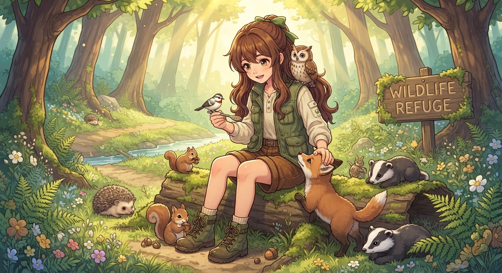

Maya, uma menina de 11 anos com uma paixão extraordinária por animais, vivia em uma casa modesta na orla de uma pequena cidade no interior, com seu avô. A floresta próxima, exuberante e cheia de vida, era seu playground e seu refúgio. Desde pequena, Maya observava com fascinação os pássaros que visitavam o jardim, os esquilos que saltitavam entre as árvores e os insetos que zumbiam nas flores. Ela conhecia os nomes de cada planta, o canto de cada pássaro e os rastros de cada animal.
Um dia, enquanto explorava a floresta, Maya encontrou um pequeno esquilo ferido. Ele estava deitado no chão, tremendo de dor, com uma asa quebrada. Maya, com seu coração compassivo, não hesitou. Ela o pegou com cuidado, o envolveu em seu casaco e o levou para casa. Seu avô, um homem sábio e compreensivo, ficou surpreso ao ver o esquilo, mas ao ouvir a história de Maya, sorriu e a ajudou a construir uma pequena gaiola para o animal.
Dias depois, Maya encontrou um pássaro com uma perna machucada. Novamente, ela o resgatou e o cuidou. A notícia sobre a "menina dos animais" se espalhou pela comunidade. Em breve, pessoas que encontravam animais feridos ou abandonados começaram a trazê-los para Maya. Ela se tornou uma verdadeira guardiã da vida selvagem.
Sua casa se transformou em um refúgio para uma variedade de animais: coelhos, corujas, ouriços, raposas, tartarugas, todos eles recebendo amor, cuidados e abrigo. Maya passava horas estudando sobre cada espécie, aprendendo sobre suas necessidades, seus hábitos e suas peculiaridades. Ela os alimentava com comidas adequadas, os curava com remédios naturais e os mantinha em ambientes confortáveis e seguros.
Um dos seus protegidos favoritos era uma raposa chamada "Foxy". Foxy era um animal inteligente e brincalhão, que rapidamente se tornou o melhor amigo de Maya. Eles passavam dias correndo pela floresta, brincando de esconde-esconde e explorando os mistérios da natureza. Maya também adorava uma coruja chamada "Luna", que a observava com seus grandes olhos sábios. Luna costumava pousar no ombro de Maya, observando o mundo com curiosidade.
A rotina de Maya era exaustiva, mas ela não se importava. Ela dedicava todo o seu tempo e energia aos seus amigos animais. Seu avô, vendo a dedicação de Maya, a ajudou a criar um espaço maior para os animais, com mais árvores, grama e um pequeno lago.
A comunidade, inicialmente cética, começou a admirar o trabalho de Maya. Eles viam como os animais se sentiam felizes e seguros sob os cuidados dela. O que começou como um ato de compaixão por um único esquilo se transformou em um projeto de vida.
Mya, com apenas 11 anos, ensinou a todos que o amor, a paciência e a compaixão são os maiores tesouros. Sua história inspirou muitas pessoas a se tornarem mais conscientes e a protegerem a vida selvagem. Ela provou que, mesmo com pouca idade, podemos fazer a diferença no mundo.
Sua casa tornou-se um símbolo de esperança e amor, um lugar onde animais feridos encontravam um novo lar e onde uma menina de 11 anos demonstrava sua profunda conexão com a natureza. A história de Maya é um lembrete poderoso de que, quando amamos incondicionalmente, podemos criar um mundo melhor para todos, tanto para nós mesmos quanto para os seres que compartilham este planeta conosco.
